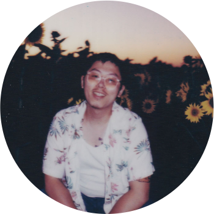

Photography
Besides being a researcher in Plant Genomics, I am also an amateur photographer mostly interested in instant and film photography. Here are some of my selected works.



赵柯涵 Zhào Kēhán
Ph.D. Candidate in Plant Biology
Department of Plant Sciences · University of California, Davis
Advisor: Dr. J. Grey Monroe
I am a Ph.D. candidate in Plant Biology at the University of California, Davis, working in the Monroe Lab within the Department of Plant Sciences. My research sits at the intersection of evolutionary genomics, plant biology, and computational biology.
My work focuses on understanding the evolutionary and functional consequences of loss-of-function (LoF) genetic variation in plants. I develop computational pipelines to identify LoF alleles and use genome-wide association approaches to link them to trait variation and adaptation.
I apply these methods across diverse plant systems — from the model organism Arabidopsis thaliana to economically important crops like cassava and diploid wheat — to uncover the genetic basis of adaptation, domestication, and trait diversity.
Before my Ph.D., I completed dual bachelor's degrees in Plant Science & Technology and English (Translation) at Shanghai Jiao Tong University, and conducted master's-level research in the Maloof Lab at UC Davis.
Developing novel computational pipelines to call LoF alleles and discover causal relationships with trait variation. Computationally recapitulating flowering time networks in Arabidopsis and validating findings through RNAseq experiments.
Computational Genomics GWASAnalyzing over 1,000 cassava genomes, including 387 newly sequenced Colombian landraces, to investigate population structure, climate-associated genetic differentiation, and the functional consequences of LoF mutations.
Population Genomics Climate AdaptationInvestigating patterns of LoF variation in Triticum monococcum and their potential roles in adaptation and domestication, bridging evolutionary biology and crop improvement.
Evolutionary Genomics Crop ImprovementDeveloped a CRISPR/Cas9 system for C. richardii to generate knockout lines targeting CrLFY, enabling functional characterization of the LEAFY transcription factor in ferns. (Master's research, Maloof Lab)
CRISPR/Cas9 Functional GenomicsBesides being a researcher in Plant Genomics, I am also an amateur photographer mostly interested in instant and film photography. Here are some of my selected works.
I am always happy to discuss research collaborations, questions about my work, or opportunities in plant genomics and evolutionary biology. Feel free to reach out by email.